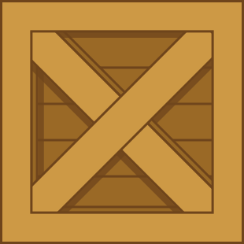

Computação Gráfica
Aulas Práticas
Coloração de Phong
Vertex Shader:
precision mediump float; attribute vec3 vertPosition; attribute vec3 vertNormal; varying vec3 fragNormal; varying vec3 vertPos; uniform mat4 mWorld; uniform mat4 mView; uniform mat4 mProj; void main() { vertPos = vertPosition ; fragNormal = (mWorld * vec4(vertNormal,0.0)).xyz; gl_Position = mProj * mView * mWorld * vec4(vertPosition, 1.0); }
Fragment Sheder:
precision mediump float; varying vec3 fragNormal; varying vec3 vertPos; uniform float Ka; // Ambient reflection coefficient uniform float Kd; // Diffuse reflection coefficient uniform float Ks; // Specular reflection coefficient uniform float shininessVal; // Shininess // Material color uniform vec3 ambientColor; uniform vec3 diffuseColor; uniform vec3 specularColor; uniform vec3 lightPos; // Light position uniform vec3 viewer; void main() { vec3 N = normalize(fragNormal); vec3 L = normalize(lightPos - vertPos); // Lambert's cosine law float lambertian = max(dot(N, L), 0.0); float specular = 0.0; if(lambertian > 0.0) { vec3 R = reflect(-L, N); // Reflected light vector vec3 V = normalize(viewer-vertPos); // Vector to viewer // Compute the specular term float specAngle = max(dot(R, V), 0.0); specular = pow(specAngle, shininessVal); } gl_FragColor = vec4(Ka * ambientColor + Kd * lambertian * diffuseColor + Ks * specular * specularColor, 1.0); }

Menu
Início
Introdução ao WebGL
Aplicação Matrizes de Transformação
Coloração de Phong
>